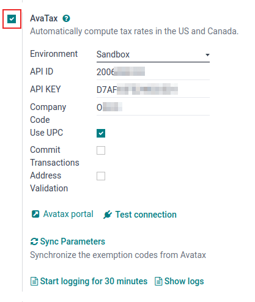
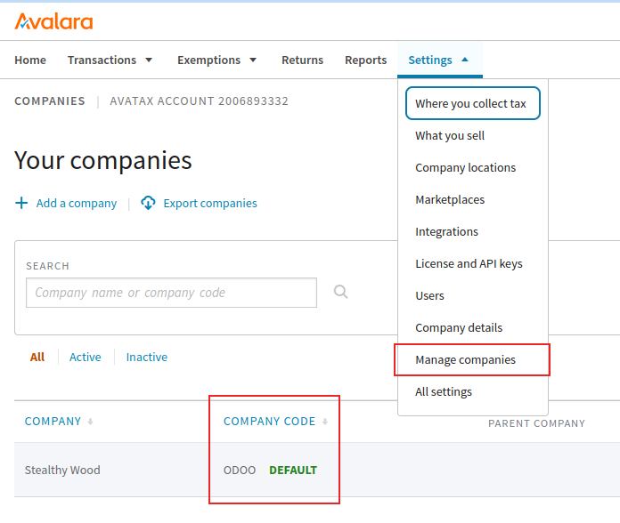
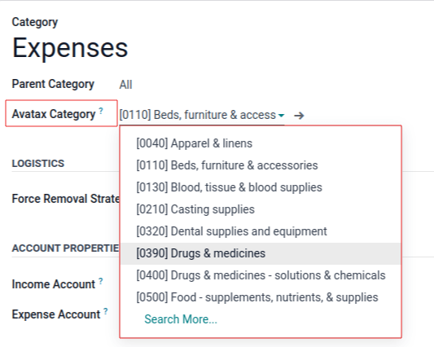

AvaTax 整合功能¶
Avalara 的 AvaTax 是一款基于云端的税务软件。将*AvaTax* 与 Odoo 整合后，当用户在 Odoo 中销售、购买和开具发票时，就可以进行实时和特定地区的税务计算。所有联合国会员国家都支持 AvaTax 税务计算，包括跨境交易。
重要
AvaTax 仅适用于与美国、加拿大和巴西的数据库/公司整合。这意味着数据库的财务规则/国家/地区只能设置为美国、加拿大或巴西。有关详细信息，请参阅以下文档：会计所在国家/地区。
AvaTax 考虑了各省/州、市、县基于地理位置的税率。它通过密切关注法律、规则、管辖范围和特殊情况（如免税期和产品免税）来提高汇款的准确性。与*AvaTax*整合的公司可以通过这种简单的:abbr:`API（应用程序编程接口）`整合来保持对内部税收计算的控制。
重要
在使用 AvaTax 进行税务计算时，Odoo 存在一些限制：
Odoo 的 销售点 应用程序 不支持 AvaTax，因为对于商店或餐馆等单一交付地址内的交易而言，动态税收计算模型过多。
AvaTax 和 Odoo 使用的是公司地址，不是 仓库地址。
**不支持**对某些特定商品（如烟草、燃料等）征收的补充税费。
参见
Avalara 的支持文档：关于 AvaTax
在 AvaTax 上设置¶
要使用 AvaTax，需要在 Avalara 开立账户进行设置。如果尚未建立账户，请与 Avalara 联系购买许可证：Avalara：Let’s Talk。
小技巧
设置账户时，请注意 AvaTax 账户 ID。在 Odoo 设置 <avatax/credentials>`中需要使用该 ID。在 Odoo 中，这个数字是 :guilabel:`API ID。
然后，创建基本的公司简介。
创建公司基本简介¶
为下一步收集必要的企业详细信息：收税地点、销售的产品/服务（及其销售地点）以及客户免税情况（如适用）。按照 Avalara 文档创建基本公司简介：
连接至 AvaTax¶
在 Avalara 中创建公司基本档案后，连接到 AvaTax。此步骤可双向链接 Odoo 和 AvaTax。
导航到Avalara的 `沙盒<https://sandbox.admin.avalara.com/>`_或 `正式运行<https://admin.avalara.com/>`_环境。这取决于公司希望集成哪种类型的 Avalara 账户。
登录以创建 许可证密钥。转到 。点击 生成许可证密钥。
重要
出现警告提示：如果您的业务应用程序已连接到 Avalara 解决方案，则连接将中断，直到您使用新的许可证密钥更新应用程序。此操作无法撤销。
生成新的许可证密钥会中断与使用 AvaTax 集成的现有商业应用程序的连接。请确保使用新的许可证密钥更新这些应用程序。
如果这将是 AvaTax 与 Odoo 的首次:abbr:API（应用程序编程接口）`整合，请点击 :guilabel:`生成许可证密钥。
如果这是一个额外的许可证密钥，请确保可以断开之前的连接。与每个 Avalara 沙盒和正式运行账户相关联的许可证密钥**只有**一个。
警告
Copy this key to a safe place. It is strongly encouraged to back up the license key for future reference. This key cannot be retrieved after leaving this screen.
Odoo 配置¶
在使用 AvaTax 之前，还需要在 Odoo 中进行一些额外的配置，以确保税务计算的准确性。
验证 Odoo 数据库是否包含必要的数据。数据库中初始设置的国家/地区决定了财政状况，并帮助 AvaTax 计算准确的税率。
会计所在国家/地区¶
要设置 会计所在国家/地区，请导航至 。
参见
在:guilabel:税务`部分，将:guilabel:`会计所在国家/地区`功能设置为:guilabel:`美国、加拿大`或:guilabel:`巴西。然后，点击 保存。
公司设置¶
在 Odoo 数据库下运行的所有公司都应在设置中列出完整的地址。导航至 ，在 :guilabel:` 公司` 部分下，确保只有一家公司在运行 Odoo 数据库。单击 更新信息 以打开更新公司详细信息的单独页面。
如果数据库中有多个公司，请点击 管理公司，加载公司列表供选择。点击特定公司，更新公司信息。
数据库管理员应确保公司的 街道…、街道2…、市、省/州、邮编`和 :guilabel:`国家/地区 都已更新。
这确保了准确的税收计算和平稳的年终会计操作。
参见
../../../general/companies
模块安装¶
接下来，确保已安装 Odoo AvaTax 模块。要执行此操作，请导航至 。在 搜索… 栏中输入 avatax，然后按 回车键。弹出以下结果：
名称 |
技术名称 |
描述 |
|---|---|---|
Avatax |
|
默认 AvaTax 模块。该模块增加了 AvaTax 的基本计税功能。 |
Avatax 用于地理定位 |
|
本模块包括将 AvaTax 整合到 Odoo 地理定位所需的功能。 |
适用于 SO 的 Avatax |
|
包括在 Odoo 中计算销售订单税款所需的信息。 |
Avatax 库存 |
|
包括 Odoo 库存中的税务计算。 |
Amazon/Avatax 桥接 |
|
包括*Amazon 连接器*和 Odoo 之间的税收计算功能。 |
Avatax 巴西 |
|
包括巴西本地化中的税款计算信息。 |
Avatax Brazil for Services |
|
该模块包含巴西本地化服务税款计算所需的功能。 |
Avatax Brazil Sale for Services |
|
该模块包括巴西本地化服务销售计税所需的功能。其中包括电子数据交换（EDI）。 |
Test SOs for the Brazilian AvaTax |
|
此模块包含巴西本地化中，测试销售订单所需的功能。 |
点击标有 Avatax: account_avatax 的模块上的 安装 按钮。此操作将安装以下模块：
Avatax：
account_avataxAvatax for SO：
account_avatax_saleAvatax 库存：
account_avatax_stock
如果需要 AvaTax 用于地理定位，或与 Amazon 连接器 一起使用，请分别点击 安装 上的 Avatax 地理定位 和 Amazon/Avatax 桥接 单独安装这些模块。
Odoo AvaTax 设置¶
要将 AvaTax API（应用程序编程接口）`与 Odoo 整合，请进入 :menuselection:`会计应用程序 –> 配置 –> 设置 部分。在:guilabel:税务 部分的:guilabel:`AvaTax`字段，是进行*AvaTax* 配置和输入凭证的地方。
首先，勾选 AvaTax 设置左侧的复选框，以激活数据库中的 AvaTax。这是一种在 Odoo 数据库中激活和停用 AvaTax 税收计算的快速、便捷的方法。
先决条件¶
首先，选择公司希望使用 AvaTax 的 环境。它可以是 沙盒 或 :guilabel:`正式运行`环境。
参见
如需帮助确定使用哪种 AvaTax 环境（Production`或 :guilabel:`Sandbox），请访问：沙箱环境与正式运行环境 <https://knowledge.avalara.com/bundle/fzc1692293626742/page/sandbox-vs-production.html>`_。
授权认证¶
现在，可以输入凭证。应在 API ID 字段中输入 AvaTax 账户 ID，并在 API 密钥 字段中输入 许可证密钥。
重要
登录*AvaTax*门户网站（`沙盒<https://sandbox.admin.avalara.com/>`_ 或`正式运行production <https://admin.avalara.com/>`_）可找到 账户 ID。在右上角，点击用户首字母和 账户。首先列出的是 账户 ID。
要访问 许可证密钥 请参阅此文档： 连接至 AvaTax。
在 公司代码 字段中，输入所配置公司的 Avalara 公司代码。如果未设置，Avalara 将其解释为 默认。可以在 Avalara 管理门户访问 公司代码。
首先，登录*AvaTax*门户网站（沙盒 或`正式运行<https://admin.avalara.com/>`_）。然后，导航至 。公司代码 值位于 公司 行中的 公司代码 列。
交易选项¶
Odoo *AvaTax*设置中有两个交易设置可以配置：使用 UPC`和:guilabel:`承诺交易。
如果勾选了 使用 UPC 旁边的复选框，交易将使用通用产品代码（UPC），而不是 Avalara 中自定义的代码。有关具体指导，请咨询注册会计师（CPA）。
如果勾选 承诺交易 复选框，Odoo 数据库中的事务将被提交到 AvaTax 中进行报告。
地址验证¶
*地址验证*功能可确保在 Odoo 中为联系人设置符合邮政标准的最新地址。这对于为客户提供准确的税款计算非常重要。
重要
地址验证 功能仅适用于北美地区的合作伙伴/客户。
此外，请勾选 地址验证 字段旁边的复选框。
重要
为了准确计算税款，最佳做法是为数据库中保存的联系人输入完整的地址。然而，AvaTax 仍可通过仅使用 国家/地区、省/州 和 邮编代码 来尽力尝试。这是三个最基本的必填字段。
保存 保存设置以执行配置。
小技巧
手动 验证 地址，方法是导航到 并选择联系人。既然 AvaTax 模块已在数据库中配置，:guilabel:`验证`按钮就会出现在:guilabel:`地址`的正下方。
点击 验证，弹出一个窗口，列出 验证地址 和 原始地址。如果:guilabel:已验证地址`是正确的税务邮寄地址，请点击:guilabel:`保存已验证地址。

警告
之前在 Odoo 数据库中输入的所有联系人地址都需要使用上述手动验证流程进行验证。如果地址是以前输入的，则不会自动验证。只有在计税时才会进行验证。
测试连接¶
将上述所有信息输入 Odoo 上的 AvaTax 设置后，点击 测试连接。这将确保 API ID 和 API 密钥 正确无误，并在 Odoo 和 AvaTax 应用程序编程接口（API）之间建立连接。
同步参数¶
完成 AvaTax 部分的配置和设置后，点击 同步参数 按钮。此操作将同步*AvaTax*中的豁免代码。
财政状况¶
接下来，导航至 。列出一个 财政状况 名称为 自动税收映射（AvaTax）。点击它以打开 AvaTax 的 财政状况配置页面。
在此，确保选中 使用 AvaTax API 复选框。
可选择勾选标有:guilabel:自动检测`字段旁边的复选框。如果勾选此选项，Odoo 将自动为 Odoo 中的交易应用此 :guilabel:`财政状况。
启用 自动检测 还可显示特定参数，如 需要增值税、外国税号、国家/地区组、国家/地区、联邦州/省 或 邮编范围。填写这些参数可筛选 财政状况 的使用。将它们留空可确保所有计算都使用该 财政状况。
警告
如果未勾选 自动检测 复选框，则每个客户都需要在联系人记录的 销售和采购 选项卡上设置 财政状况。要执行此操作，请导航至 或 。然后，选择要设置财务位置的客户或联系人。
导航至 销售和采购 选项卡，并向下导航至标有 财务状况 的部分。将 财务状况 字段设置为客户的财务状况。
AvaTax 账户¶
选择:guilabel:使用 AvaTax API`复选框选项后，会出现一个新的:guilabel:`AvaTax 选项卡。点击该选项卡可显示两个不同的设置。
第一个设置是 AvaTax 发票账户，第二个设置是 AvaTax 退税账户。确保两个账户都已设置，以便顺利保存年终记录。有关设置这两个账户的具体指导，请咨询注册会计师（CPA）。
点击 保存，以执行更改。
税项映射¶
AvaTax 整合功能适用于销售订单和发票，并包含 AvaTax* 财务状况。
小技巧
此外，在 自动税收映射（AvaTax） 财务位置中还有 税收映射 选项卡和 账户映射 选项卡，在这里也可以配置产品的映射。要访问 自动税收映射（AvaTax） 财务位置，请导航至 。
产品类别映射¶
使用整合前，请在产品类别中指定 Avatax 类别。导航至 。选择要添加 AvaTax 类别 的产品类别。在 AvaTax 类别 字段，从下拉菜单中选择一个类别，或 搜索更多… 打开完整的选项列表。
产品映射¶
也可在单个产品上设置 AvaTax 类别。要设置 Avatax 类别，请访问 。选择要添加 Avatax 类别 的产品。在 一般信息 选项卡的最右侧，有一个标有：Avatax 类别 的选择器字段。最后，点击下拉菜单，选择一个类别，或 搜索更多… 查找未列出的类别。
注解
如果产品及其类别都设置了 AvaTax 类别，则产品的 AvaTax 类别 优先。
重要
应根据所选路径，为每个 产品 或 产品类别 完成在 产品 或 产品类别 上映射 AvaTax 类别。
参见